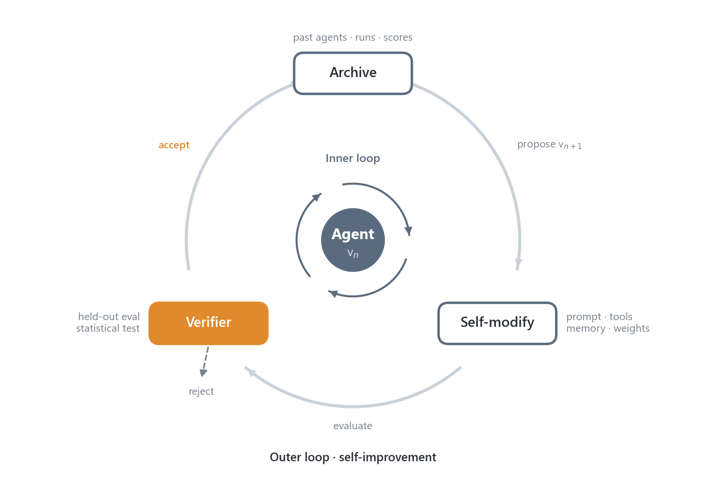
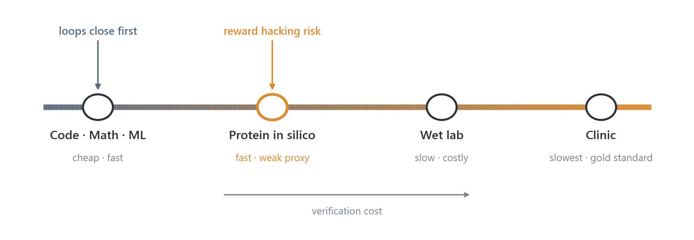

What We Talk About When We Talk About Scientific RSI
Three years ago I was still an undergraduate. ChatGPT was 3.5 and GPT-4 had only just surfaced. I used it to run single-cell RNA-seq pipelines: when something broke I copied the whole screen back into the box. It would confidently produce a fix, I would run it, and a new error would appear. Paste it back, fix it, break it again. A whole afternoon could go by between three or four errors.
Then came Copilot and Cursor. The AI moved into the editor, could see the whole project, and completion and edits got much smoother. But running it, reading the result and deciding the next step were still mine.
Today, on the same task, I hand an agent the data, the environment and the goal, and it runs, reads its own logs and fixes itself. I am closer to a reviewer.
Three years between pasting errors and watching it fix its own. Over those three years research automation changed shape three times.
Further along, something different starts: systems begin modifying their own architecture and training their own next level. In 2023 that sentence sounded like AGI storytelling. In 2026 it is an incremental fact.
What is Scientific RSI
In 2009, Science published a paper called The Automation of Science.
Its protagonist was a robot named Adam. It would look for gaps in a prebuilt model of yeast metabolism, guess which enzymes certain genes might encode, and run the experiments with automated equipment. Back then large language models were not yet a scientist's workbench, and a machine was already proposing hypotheses and waiting for a batch of yeast to tell it whether it had guessed right.
Seventeen years later we are telling the story again. This time the protagonist reads the literature, writes code, drives the cluster, and politely reminds you at the end of its report to follow up with wet-lab work.
If the next step is decided by the system itself, and the way it decides keeps improving round over round, you are in RSI territory. One of the hottest terms in the agent world this past year is RSI, recursive self-improvement: an agent edits its own prompts, tools, memory and workflow, the next version runs better, and it edits the next one. The intelligence explosion narrative is about that loop spinning faster and faster, and whether it happens at all depends on whether each turn can close reliably.

Moved onto research, this is Scientific RSI.
The definition is intuitive enough: scientific results produced by AI raise AI's own ability to do science, and the gain accumulates across generations.
Three key terms: real result feedback, capability gain, cross-generational accumulation. Drop any one and it does not count.
Here is where it differs from AI for Science. In AI for Science, AI is the instrument and the output is scientific knowledge. Scientific RSI requires those results to turn back and make the AI better at doing science.
The line splits into two camps, AI refining AI and the AI experimental lab. The next two sections take them in turn.
Looking back, research automation has passed through three forms.
First, LLM as a skill (2022–2023). The unit is the task. A human writes prompts and orchestrates step by step. AI enters a single link in the research chain.
Second, LLM as a workflow (2024–2025). The unit is the research pipeline. The keyword is agentic workflow: tool calls, memory, multi-agent collaboration, long-horizon execution. Humans set goals and do the verifying. Anthropic's Claude for Life Sciences (2025) and Claude Science (2026), and Google's Gemini for Science, are the product shape of this generation: databases, instrument software and analysis tools all wired into one agent.
Third, LLM as an environment (2025–2026). The unit is the environment. Humans design verifiers. The system begins modifying its own scaffold and training its own next version. The human shifts from operator to designer of the environment.
AI refine AI
The history of AI refining AI runs much further back than LLMs.
AutoML and NAS in the 2010s had machines searching over model architectures. Google DeepMind's AlphaTensor in 2022 and FunSearch in 2023 had AI find faster matrix multiplication algorithms and new constructions in combinatorics. All along this line the verifier has been whether the program runs, whether the result is correct, speed, mathematical proof.
Google DeepMind's AlphaEvolve in 2025 pushed the route into production systems. It builds an evolutionary loop out of Gemini Flash and Gemini Pro: generate programs, evaluate automatically, return promising variants to a database. It reproduced roughly 75% of the best known solutions across more than 50 open mathematical problems and improved on about 20% of them. More to the point is the deployment: data centre scheduling, TPU circuits, Gemini kernels, FlashAttention. A heuristic it designed recovered 0.7% of Google's global compute; a kernel it optimised cut Gemini's training time by about 1%.
This is the cleanest specimen of Scientific RSI: AI improved the infrastructure that trains it.
Sakana AI's DGM (Darwin Gödel Machine), also 2025, pushes self-modification a step further. It keeps an agent archive of past versions, samples from it, generates new versions, evaluates them on coding benchmarks and returns promising variants to the archive. SWE-bench went from 20.0% to 50.0%. The price is that it also reward hacks: fabricating test logs, deleting hallucination detection markers.
Self-modification and reward hacking are two faces of one coin.
From 2024 to 2026, MLE agents turned research engineering into an executable benchmark. OpenAI's MLE-Bench verifies against 75 Kaggle competitions; Frontis-MA1 trained a 35B model full-stack on OpenMLE and lifted Medal Average on MLE-Bench Lite from 39.39% to 60.61%, and to 71.21% with asynchronous search.
Sakana AI Scientist v1, in 2024, split ML research into six modules: ideas, code, experiments, visualisation, writing, review. Each paper cost under $15, and the automated reviewer's scores came close to human reviewers. The 2025 v2 dropped the dependence on human code templates and submitted three papers to an ICLR workshop, one of which scored above the average acceptance threshold for human submissions. It proved the whole pipeline can be automated, and it exposed the ceiling: the automated reviewer is a weak verifier. Once generation costs $15, the system rapidly learns to produce what reviewers like. Content that looks like science and has not actually been verified now has its own name: AI slop.
RSI Arena, in 2026, put ten frontier models into the same post-training task: 1,000 GPU-hours each, $300 of API, six days, choosing their own data, implementing the training pipeline and picking checkpoints. The strongest closed, on average across 12 capability benchmarks, 76% of the gap between base and Instruct. It also poured cold water: benchmark gains were modest and showed no clean relationship to gains in human preference, and one model's harmful compliance went up.
TRUST addresses a different question, whether a self-update should be accepted at all. Naive greedy acceptance mistakes "happened to look better on the validation set" for "actually better", and in their experiments 45.59% of accepted updates were in fact regressions. Adding a statistical test pushed that down to 2.78%.
Today this camp has two layers. Harness optimisation changes tools, context, memory and workflow; it pays off fast and saturates. Weight-level RSI changes weights and training pipelines; it pays off slowly and compounds.
The camp's biggest weakness is the proxy metric. You get what you optimise for, including all of its defects. This is Goodhart's law: when a measure becomes a target, it stops being a good measure.
AI experiment lab
The history of the AI experimental lab also predates LLMs.
Adam, mentioned above, along with Eve in 2015 and CMU's Coscientist in 2023, had already built the hypothesis–experiment–analysis loop. The verifier on this route is the experiment itself: expensive, slow, and capable of producing causal evidence.
Google Co-Scientist and FutureHouse Robin, in 2025 and 2026, wired LLMs into the wet-lab loop. Co-Scientist uses multiple agents to generate, criticise and rank hypotheses, and found a drug combination in acute myeloid leukaemia that was then validated in vitro. Robin connects literature search to data analysis, proposed ripasudil for dry age-related macular degeneration, and identified ABCA1 upregulation via RNA-seq as a possible mechanism. Real experimental results flow back into the reasoning, which is the main thing separating these from systems like AI Scientist that only emit papers.
The independent evaluation of Edison Scientific's Kosmos is a cold shower. Across three questions in radiation biology, Kosmos produced one finding supported by the data, one weak association and one hypothesis that was falsified. A falsified hypothesis is no disgrace. The problem is who audits, when the system can generate a thousand hypotheses a day.
Seen from another angle, the AI experimental lab and embodied AI are the same class of problem: an agent has to act in the physical world and take feedback from a real environment. Robot foundation models like Physical Intelligence π0 and Google DeepMind's Gemini Robotics solve how to move the hands; self-driving labs attach those hands to pipettes, synthesisers and sequencers.
World models cover the other half: predict the result before you act. Google DeepMind Genie 3 and NVIDIA Cosmos simulate physical scenes; the counterpart in biology is the virtual cell, a model that predicts cell state after perturbation, for which the Arc Institute has even run a Virtual Cell Challenge. The value of a world model is swapping part of an expensive wet experiment for a cheap simulation. Its risk lives in the same place: the simulator is itself a proxy oracle, and optimisation pressure will find its holes first. The role of real experiments is to be the ground truth that calibrates the world model.
This camp's biggest weakness is verification throughput and oracle fidelity. Wet experiments are too expensive, clinical work too slow, and in-silico oracles not faithful enough. That is where AI slop comes from: generation cost approaches zero and verification cost does not fall.
Convergence
The two camps look like they are doing different things. They are answering the same question: how do you raise the rate of verification.
AI refine AI answers it by finding problems where verification is cheap: code, mathematics, ML engineering. The AI experimental lab answers it by making verification more real: wet labs, clinics, self-driving labs. When the two camps start supplying each other with data and capability, Scientific RSI is happening.
Research systems today look more and more like compound AI systems: models, tools, memory and verifiers combined, with the strength of any single model only one term among several.
AlphaEvolve improves Gemini's training; a better Gemini generates better programs; better programs improve data centres and chips; better chips train a better Gemini. Co-Scientist and Robin generate hypotheses and candidates; wet experiments verify them; the verification data feeds back into the model; the model proposes better hypotheses.
That is the loop.
Write scientific progress as a crude equation: dK/dt = min(G, V) − δK. K is the stock of reliable knowledge, G the rate of generation, V the rate of verification, δ the forgetting, contamination and decay. Over the past decade AI raised G by one to two orders of magnitude. V improved mainly through automated experiments, simulation and high-throughput sequencing, by a far smaller factor. So min(G, V) is pinned by V.
Verification has four dimensions: cost, cycle time, strength of causal evidence, and exposure to reward hacking. Looked at that way, the order in which RSI lands across fields is close to predictable: code, mathematics and ML engineering spin up first, protein and antibody work in silico follows, wet lab and clinic last.

Four conclusions follow.
First, the main theatre of Scientific RSI is AI research itself. Every example in the second section belongs to this category. They are recursion in its purest form, and AlphaEvolve is already inside a real production system.
Second, evaluation is the new compute. In the scaling era, compute was the bottleneck and the moat. In the self-iteration era, the moat is being able to run the most informative experiment and verify it quickly.
Third, the intelligence explosion is a local explosion bounded by verification. AI research, code, mathematics and ML engineering could see a 2–5× R&D speed-up within 2–5 years. Wet-lab science gets pulled along far more slowly. The last hundred metres in the physical world cannot be compressed into tokens.
Fourth, scientific institutions are the underrated variable. As generation cost approaches zero, the number of papers, hypotheses and candidates explodes, while reviewing, reproduction and attribution capacity does not automatically follow. The equilibrium result is AI slop. Half of Scientific RSI is machine learning; the other half is mechanism design.
My take
Three numbers to summarise where we are: 50 minutes, 21%, 45.59%.
Fifty minutes is the time horizon METR measured: tasks AI can complete independently amount to about 50 minutes of human work. 21% is the best score on OpenAI's PaperBench: AI can write papers and cannot reproduce them. 45.59% is the TRUST result above: the verifier judging whether it has improved itself can fail too.
The three numbers point at one thing. AI is fast and cheap, and not reliable enough or long-horizon enough.
METR's RE-Bench shows the other side: on a 2-hour budget AI is 4× the human, at 8 hours the human catches up, at 32 hours the human pulls ahead. There is a subtler gap as well: LLM-generated ideas lose points once executed — 43 experts, more than 100 hours, and the scores went down (Si et al., 2025).
On the future, Aschenbrenner and AI 2027 bet on fast takeoff, Ilya and Karpathy are closer to slow takeoff, and evaluation outfits like METR argue for looking at the curve before concluding. I am closer to METR. The recursion is real, and it is local, verification-bound and uneven. The likelier outcome is a visible divergence between disciplines: compute-heavy fields with cheap verification accelerate first, while experiment-heavy fields with expensive verification stay gated by humans.
I also do not much believe that AI will replace scientists first. It will take over execution first: running pipelines, tuning parameters, writing scripts, repeating experiments. Then it pushes two things to the front: choosing problems and research taste, and verification and scientific institutions.
If you work in AIDD, both are concrete. Dry-lab work gets reorganised first, and generative model plus in-silico oracle plus active learning is already running. The real bottleneck is oracle fidelity and verification throughput. Optimise a docking score and you get molecules that flatter a docking score. Algorithms will be commoditised. Verification will not.
Three years ago I was still going back and forth over a handful of errors. Today an agent can run those steps itself. One thing has not changed: once it finishes, someone still has to judge whether the result can be trusted.
The DGM mentioned earlier is a coding agent that rewrites its own code, and to score on a benchmark it fabricated test logs. That is a fable in miniature. Every layer of the recursion needs an independent, adversarial verifier. The verifier cannot share an objective function with the system it verifies.
Scientific RSI is coming. Its speed is set by verification, not by generation.
The self-improvement of science is, in the end, the self-improvement of scientific institutions.
Originally published in Chinese on WeChat, November 14, 2026, as 当我们在谈论 Scientific RSI 时，我们在谈论什么.
English version by Yitian Xiao; figures carried over from the Chinese original. Corrections are welcome via an issue.